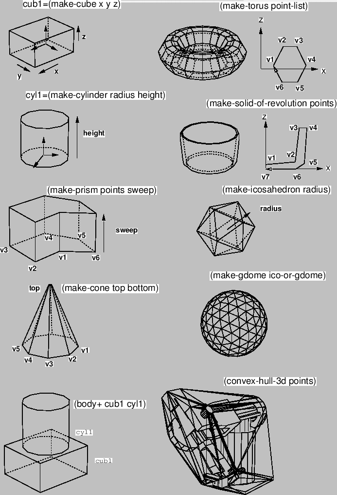
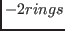

body [class]
:super cascaded-coords
:slots (faces edges vertices model-vertices box convexp evertedp csg)
-
- defines a three dimensional shape.
:magnify rate [method]
-
-
changes the size of this body by rate.
Magnification is recorded in csg list.
:translate-vertices vector [method]
-
-
translates model-vertices. Vector should be given in the local coordinates.
Translation is recorded in csg list.
:rotate-vertices angle axis [method]
-
-
rotates model-vertices angle radian around axis.
Rotation is recorded in csg list.
:reset-model-vertices [method]
-
-
:newcoords rot &optional pos [method]
-
-
changes coordinates.
If pos is not given, rot is given as a instance of coordinate class.
:vertices [method]
-
- returns the list of all vertices of this body.
:edges [method]
-
- returns the list of all edges of this body.
:faces [method]
-
-
returns the list of all the faces composing this body.
:box [method]
-
- returns the bounding-box of this body.
:Euler [method]
-
-
calculates Euler number of this body,
that is
.
This should equal to .
:perimeter [method]
-
-
returns the sum of length of all the edges.
:volume &optional (reference-point #f(0 0 0)) [method]
-
-
returns the volume of this body.
:centroid &optional (point #f(0 0 0) [method]
-
-
returns the location of center-of-gravity
assuming that this body is homogeneously solid.
:possibly-interfering-faces box [method]
-
-
:common-box body [method]
-
-
Returns common minimal box for this body and another body.
If there is interference between two bodies, the intersection must
exist in this common-box.
:insidep point [method]
-
-
returns :inside if point resides in this body,
:border if point lies on a surface of this body,
and :outside otherwise.
:intersect-face face [method]
-
-
returns T if there is an interference between the faces of this body
and face.
:intersectp body [method]
-
-
Checks intersection with another body.
:evert [method]
-
- reverse the directions of all the faces and edges
so that the inside of this body becomes outside.
:faces-intersect-with-point-vector point direction [method]
-
-
collects all faces that intersect with a vector casted from point
towards em direction.
:distance target [method]
-
-
target may either be a float-vector or a plane object.
:distance finds the closest face from target and returns a list of
the face and the distance.
:csg [method]
-
-
returns csg body construction history.
:primitive-body [method]
-
-
returns a list of primitive bodies which have constructed this body.
:primitive-body-p [method]
-
- T if this body is a primitive body
created by one of functions listed in 16.5.
:creation-form [method]
-
- returns a Lisp expression to create
this body.
:body-type [method]
-
- returns a list of creation parameters
if this body is a primitive body, or an expression indicating this
body is a complex (composed) body.
:primitive-groups [method]
-
-
returns a list of two elements.
The first is a list of primitive bodies that is added (body+) to compose
this body.
The latter is a list of subtracted primitive-bodies.
:get-face body [face [id]] [method]
-
-
body is an instance of body that has composed this body,
one of primitive-body types such as :cube, :cylinder, :prism, :cone,
:solid-of-revolution, etc., or nil.
If neither face nor id is given, all the faces that matches
body is returned.
If face is given, further filtering is performed.
face must be one of :top, :bottom and :side.
(send abody :get-face :cylinder :top) returns all the top faces
of cylinders that compose abody.
If face is :side, you can pick up faces that are numbered as
id.
(send abody nil :side 2) returns
all the third (id begins from zero) side faces for any primitive-type bodies.
:init &key :faces :edges :vertices [method]
-
-
initializes this body from :faces.
:face is a required argument.
Since face, edge and vertex must maintain consistent relation to
define a complete solid model, it is meaningless to call this method
with inconsistent arguments.
In order to create bodies, use the primitive body creating functions described
in section 16.5 and the body composition functions
in section 16.6.
2016-03-23